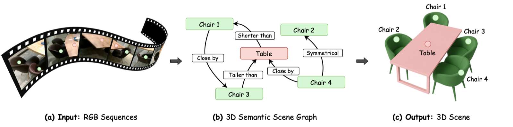
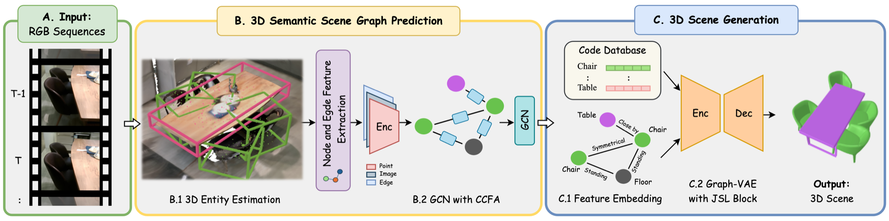
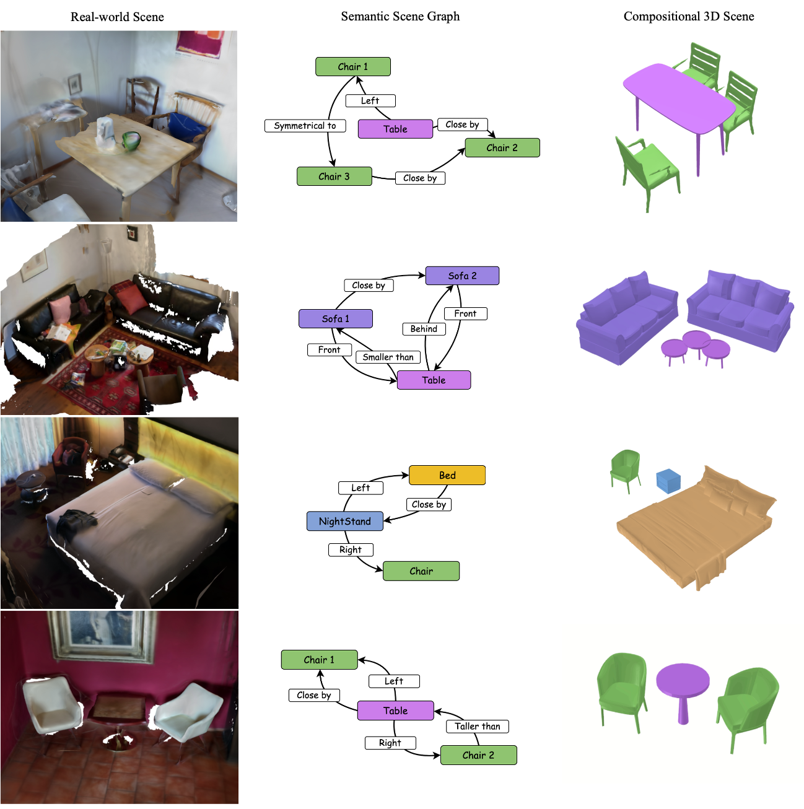

We introduce DeWorldSG, which generates depth-aware 3D semantic scene graphs by leveraging world-model priors for context-consistent scene understanding.

We introduce DeWorldSG, a depth-aware framework for 3D semantic scene graph generation via world-model priors. To understand real-world spaces for embodied AI, robotics, and spatial computing, it is essential to recover not only object categories and geometry, but also the semantic relationships that organize a scene. Existing approaches often struggle to capture contextual object relationships under noisy depth estimates, incomplete observations, and complex indoor arrangements. DeWorldSG addresses these challenges by grounding scene graph prediction in depth-aware 3D representations and using world-model priors to enrich object and relationship features. Following the SceneLinker project-page template, this preliminary page uses SceneLinker figures and descriptions as placeholders until the final DeWorldSG materials are available.

DeWorldSG's goal is to represent the real world at the graph level and to construct context-consistent 3D semantic scene graphs. Our preliminary pipeline follows the structure of SceneLinker: (1) depth-aware 3D scene representation, and (2) semantic relationship prediction guided by world-model priors.
The first phase incrementally constructs segmented maps and point clouds from image sequences to estimate 3D entities. These entities form nodes in a neighbor graph represented by oriented bounding boxes, multi-view image observations, and point features. A graph network then propagates features between nodes to refine object and relationship predictions.
In the second phase, depth-aware object features and predicted spatial layouts are combined with priors from world models. These priors provide high-level contextual cues that help disambiguate semantic relations and preserve consistency across complex indoor scenes.

@inproceedings{kim2026deworldsg,
title={DeWorldSG: Depth-Aware 3D Semantic Scene Graph Generation via World-Model Priors},
author={Kim, Seok-Young and Kim, Dooyoung and Cho, Woojin and Song, Hail and Kang, Suji and Woo, Woontack},
booktitle={European Conference on Computer Vision (ECCV)},
year={2026}
} DeWorldSG: Depth-Aware 3D Semantic Scene Graph Generation via World-Model Priors
DeWorldSG: Depth-Aware 3D Semantic Scene Graph Generation via World-Model Priors